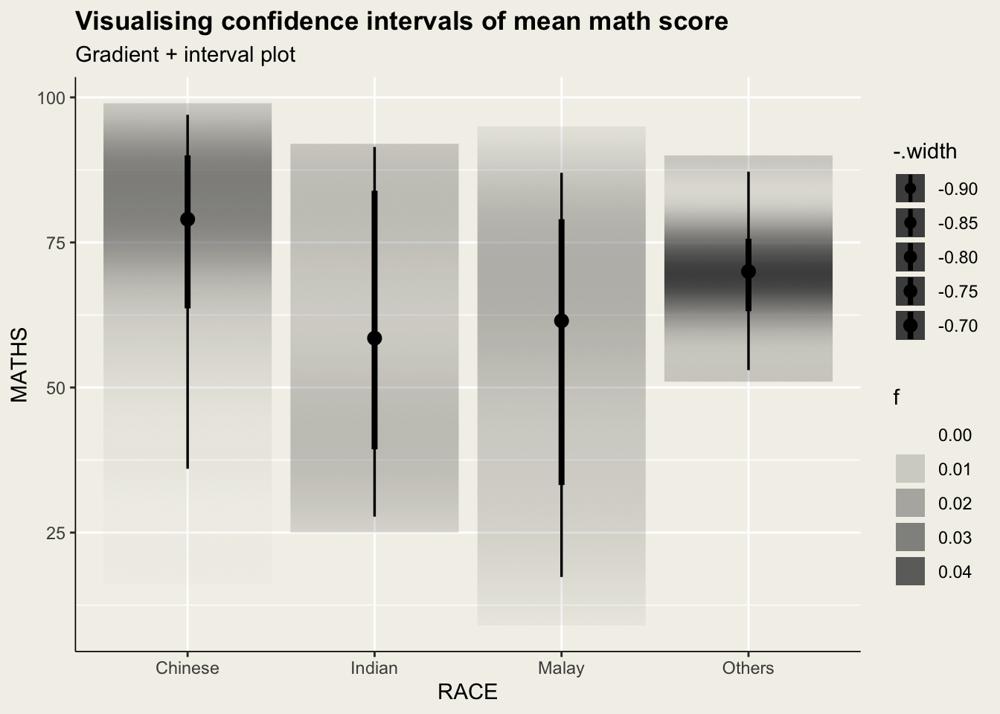
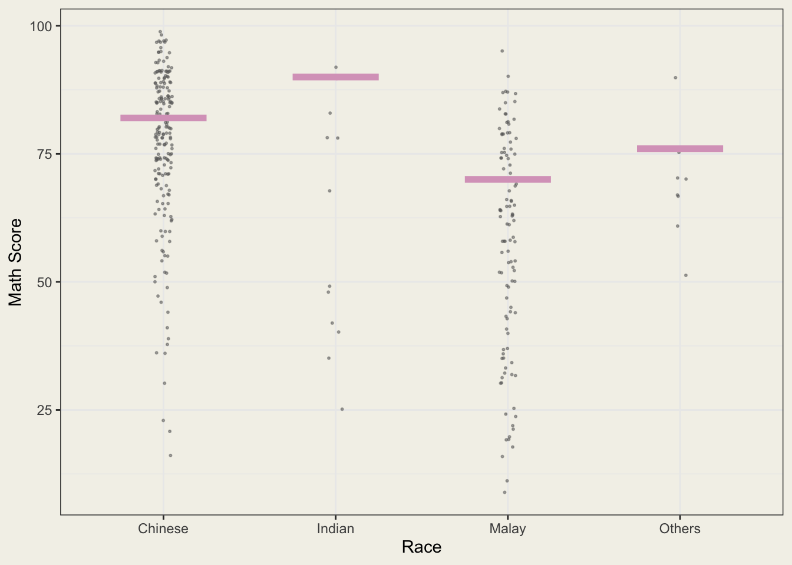

pacman::p_load(plotly, crosstalk, DT, gganimate,
ggdist, tidyverse, ggthemes)Hands-on Exercise 04.c
ggplot2
ggdist
ungeviz
Visualising Uncertainty
1 Learning Outcome
In this exercise, we will gain hands-on experience on creating statistical graphics for visualising uncertainty. The learning objectives are:
plot statistics error bars by using
ggplot2plot interactive error bars by combining
ggplot2,plotlyandDTcreate advanced and more appealing plot by using
ggdistcreate hypothetical outcome plots (HOPs) by using
ungevizpackage
2 Getting Started
Use the pacman package p_load() to check, install and launch the following R packages:
| Library | Description |
|---|---|
| ggdist | a ggplot2 extension spacially desgin for visualising distribution and uncertainty |
| tidyverse | a family of R packages for data processing |
| crosstalk | for implementing cross-widget interactions (currently, linked brushing and filtering) |
In this exercise, Exam_data.csv will be used. We use read_csv() of readr to import the data:
exam <- read_csv("data/Exam_data.csv")After importing the data, let’s examine it to understand its data structure:
The dataset contains 7 attributes and 322 observations with no missing values.
The categorical attributes are: ID, CLASS, GENDER and RACE.
The continuous attributes are: MATHS, ENGLISH and SCIENCE.
head(exam)# A tibble: 6 × 7
ID CLASS GENDER RACE ENGLISH MATHS SCIENCE
<chr> <chr> <chr> <chr> <dbl> <dbl> <dbl>
1 Student321 3I Male Malay 21 9 15
2 Student305 3I Female Malay 24 22 16
3 Student289 3H Male Chinese 26 16 16
4 Student227 3F Male Chinese 27 77 31
5 Student318 3I Male Malay 27 11 25
6 Student306 3I Female Malay 31 16 16str(exam)spc_tbl_ [322 × 7] (S3: spec_tbl_df/tbl_df/tbl/data.frame)
$ ID : chr [1:322] "Student321" "Student305" "Student289" "Student227" ...
$ CLASS : chr [1:322] "3I" "3I" "3H" "3F" ...
$ GENDER : chr [1:322] "Male" "Female" "Male" "Male" ...
$ RACE : chr [1:322] "Malay" "Malay" "Chinese" "Chinese" ...
$ ENGLISH: num [1:322] 21 24 26 27 27 31 31 31 33 34 ...
$ MATHS : num [1:322] 9 22 16 77 11 16 21 18 19 49 ...
$ SCIENCE: num [1:322] 15 16 16 31 25 16 25 27 15 37 ...
- attr(*, "spec")=
.. cols(
.. ID = col_character(),
.. CLASS = col_character(),
.. GENDER = col_character(),
.. RACE = col_character(),
.. ENGLISH = col_double(),
.. MATHS = col_double(),
.. SCIENCE = col_double()
.. )
- attr(*, "problems")=<externalptr> summary(exam) ID CLASS GENDER RACE
Length:322 Length:322 Length:322 Length:322
Class :character Class :character Class :character Class :character
Mode :character Mode :character Mode :character Mode :character
ENGLISH MATHS SCIENCE
Min. :21.00 Min. : 9.00 Min. :15.00
1st Qu.:59.00 1st Qu.:58.00 1st Qu.:49.25
Median :70.00 Median :74.00 Median :65.00
Mean :67.18 Mean :69.33 Mean :61.16
3rd Qu.:78.00 3rd Qu.:85.00 3rd Qu.:74.75
Max. :96.00 Max. :99.00 Max. :96.00 any(is.na(exam))[1] FALSEIn R, factors are used to handle categorical data and ordered variable. As there are categorical attributes in our dataset, we are going to convert their data type from <chr> to <fctr>:
col <- c("CLASS","GENDER","RACE")
exam <- exam %>% mutate(across(all_of(col), as.factor))After converting the attributes, let’s check the data again:
head(exam)# A tibble: 6 × 7
ID CLASS GENDER RACE ENGLISH MATHS SCIENCE
<chr> <fct> <fct> <fct> <dbl> <dbl> <dbl>
1 Student321 3I Male Malay 21 9 15
2 Student305 3I Female Malay 24 22 16
3 Student289 3H Male Chinese 26 16 16
4 Student227 3F Male Chinese 27 77 31
5 Student318 3I Male Malay 27 11 25
6 Student306 3I Female Malay 31 16 163 Visualizing the uncertainty of point estimates: ggplot2 methods
A point estimate is a single number, such as a mean. Uncertainty, on the other hand, is expressed as standard error, confidence interval, or credible interval.
Firstly, code chunk below will be used to derive the necessary summary statistics.
my_sum <- exam %>%
group_by(RACE) %>% # group the observation by RACE
summarise(n=n(), #sample size
mean = mean(MATHS),
sd = sd(MATHS)) %>%
mutate(se=sd/sqrt(n-1)) #calculate standard error of the sample mean
my_sum# A tibble: 4 × 5
RACE n mean sd se
<fct> <int> <dbl> <dbl> <dbl>
1 Chinese 193 76.5 15.7 1.13
2 Indian 12 60.7 23.4 7.04
3 Malay 108 57.4 21.1 2.04
4 Others 9 69.7 10.7 3.79Next, the code chunk below will be used to display my_sum tibble data frame in an html table format by using kable() function in knitr.
knitr::kable(head(my_sum),format = "html")| RACE | n | mean | sd | se |
|---|---|---|---|---|
| Chinese | 193 | 76.50777 | 15.69040 | 1.132357 |
| Indian | 12 | 60.66667 | 23.35237 | 7.041005 |
| Malay | 108 | 57.44444 | 21.13478 | 2.043177 |
| Others | 9 | 69.66667 | 10.72381 | 3.791438 |
3.1 Plotting standard error bars of point estimates
Now we are ready to plot the standard error bars of mean maths score by race as shown below.
stat = 'identity'in thegeom_point()means that don’t apply any statistics, just plot ‘mean’ values.The error bars are computed by using the formula mean+/-se.
Display Code
ggplot(my_sum) +
geom_errorbar(
aes(x=RACE,
ymin = mean-se,
ymax = mean+se),
width = 0.2,
colour = "black",
alpha = 0.9,
linewidth =0.5)+
geom_point(aes(x=RACE,y=mean),
stat = 'identity',
color = "#D9A4C3",
size = 1.5, alpha=1)+
labs(title = "Standard Error of Mean Math Score by Race",
subtitle = "68% Confidence Interval",
y="Mean math score")+
theme_wsj(base_size = 9)+
theme(panel.background = element_rect(fill = "#f3f1e9"),
plot.background = element_rect(fill = "#f3f1e9",color = NA),
plot.title = element_text(hjust=0, face="bold", size = 18),
plot.subtitle = element_text(hjust=0, size = 14),
axis.title.y = element_text(size = 10),
axis.line.x = element_line(linewidth = 0.3),
axis.line.y = element_line(linewidth = 0.3)
)
3.2 Plotting confidence interval of point estimates
Instead of plotting the standard error bar of point estimates, we can also plot the confidence intervals of mean maths score by race.
The confidence intervals are computed by using the formula
mean+/-1.96*seThe
reorder(RACE, -mean)function reorders theRACEfactor so that the groups with the highest means appear first on the x-axis.
Display Code
ggplot(my_sum) +
geom_errorbar(
aes(x=reorder(RACE, -mean),
ymin = mean-1.96*se,
ymax = mean+1.96*se),
width = 0.2,
colour = "black",
alpha = 0.9,
linewidth =0.5)+
geom_point(aes(x=RACE,y=mean),
stat = 'identity',
color = "#D9A4C3",
size = 1.5, alpha=1)+
labs(title = "Standard Error of Mean Math Score by Race",
subtitle = "95% Confidence Interval",
y="Mean math score")+
theme_wsj(base_size = 9)+
theme(panel.background = element_rect(fill = "#f3f1e9"),
plot.background = element_rect(fill = "#f3f1e9",color = NA),
plot.title = element_text(hjust=0, face="bold", size = 18),
plot.subtitle = element_text(hjust=0, size = 14),
axis.title.y = element_text(size = 10),
axis.line.x = element_line(linewidth = 0.3),
axis.line.y = element_line(linewidth = 0.3)
)
3.3 Visualizing the uncertainty of point estimates with interactive error bars
In this section, we will plot interactive error bars for the 99% confidence interval of mean maths score by race as shown in the figure below.
bscols(): This is used to create a layout where the plot occupies 4 columns (out of a 12-column grid) and the data table occupies 8 columns. This is typically used in Shiny apps or R Markdown documents to create a side-by-side layout.
Display Code
shared_df = SharedData$new(my_sum) #create new shared data frame
bscols(
widths = c(4, 8), # Set column widths for plot and table 4:8
ggplotly(
ggplot(shared_df) +
geom_errorbar(
aes(x = reorder(RACE, -mean),
ymin = mean - 2.58 * se,
ymax = mean + 2.58 * se),
width = 0.2,
colour = "black",
alpha = 0.9,
linewidth = 0.5
) +
geom_point(
aes(x = RACE, y = mean,
text = paste("RACE:", RACE,
"<br>N:", n,
"<br>Avg. Scores:", round(mean, 2),
"<br>99% CI:[", round((mean - 2.58 * se), 2), ",",
round((mean + 2.58 * se), 2), "]")),
stat = 'identity',
color = "#D9A4C3",
size = 1.5,
alpha = 1
) +
labs(x="Race",y="Average Scores",
title = "99% Confidence interval of average /<br>maths scores by race")+
theme_wsj(base_size = 9) +
theme(
panel.background = element_rect(fill = "#f3f1e9"),
plot.background = element_rect(fill = "#f3f1e9", color = NA),
plot.title = element_text(hjust = 0, face = "bold", size = 11.5),
axis.title.y = element_text(size = 10),
axis.title.x = element_text(size = 10),
axis.text.x = element_text(angle = 45, vjust = 0.5, hjust=1),
tooltip = "text"
)
),
DT::datatable(
shared_df,
rownames = FALSE,
class = "compact",
width = "100%",
options = list(pageLength = 10, scrollX = TRUE),
colnames = c("No. of pupils", "Avg Scores", "Std Dev", "Std Error")
) %>%
formatRound(columns = c('mean', 'sd', 'se'), digits = 2)
)4 Visualising Uncertainty: ggdist package
ggdist is an R package that provides a flexible set of ggplot2 geoms and stats designed especially for visualising distributions and uncertainty.
It is designed for both frequentist and Bayesian uncertainty visualization, taking the view that uncertainty visualization can be unified through the perspective of distribution visualization:
Frequentist models: Visualizing confidence distributions or bootstrap distributions (see vignette(“freq-uncertainty-vis”));
Bayesian models: Visualizing probability distributions (see the tidybayes package, which builds on top of ggdist).
4.1 Visualizing the uncertainty of point estimates: ggdist methods
In the code chunk below, stat_pointinterval() of ggdist is used to build a visual for displaying distribution of maths scores by race:
Display Code
exam %>%
ggplot(aes(x = RACE,
y = MATHS)) +
stat_pointinterval() +
aes(interval_color=stat(level)) +
scale_color_manual(
values = c("grey20", "grey50"), # customize colors for 95% and 99% CI
aesthetics = "interval_color") +
labs(
title = "Visualising confidence intervals of mean math score",
subtitle = "Mean Point + Multiple-interval plot of 66% and 95%")+
theme(panel.background = element_rect(fill = "#f3f1e9"),
plot.background = element_rect(fill = "#f3f1e9",color = NA),
legend.background = element_rect(fill = "#f3f1e9"),
plot.title = element_text(face = "bold"),
axis.line.x = element_line(linewidth = 0.3),
axis.line.y = element_line(linewidth = 0.3))Below are some stat_pointinterval() argument
| Argument | Description |
|---|---|
| .width | a vector of probabilities to use that determine the widths of the resulting intervals. The default setting is .width = c(0.66, 0.95), meaning plotting 66% CI and 95% CI |
| .point | This argument determines the point summary (typically mean, median, or mode) |
| .interval | It decides the interval type (quantile interval, qi; highest-density interval, hdi; or highest-density continuous interval, hdci). |
| orientation | Whether this geom is drawn horizontally or vertically: "horizontal" (or "y"), "vertical" (or "x"), NA |
We are going to customize the arguments we learned above:
Display Code
exam %>%
ggplot(aes(x = RACE, y = MATHS)) +
stat_pointinterval(.width = 0.95,
.point = median,
.interval = qi,
.orientation = "na") +
labs(
title = "Visualising confidence intervals of median math score",
subtitle = "Median Point + 95% CI plot")+
theme(panel.background = element_rect(fill = "#f3f1e9"),
plot.background = element_rect(fill = "#f3f1e9",color = NA),
plot.title = element_text(face = "bold"),
axis.line.x = element_line(linewidth = 0.3),
axis.line.y = element_line(linewidth = 0.3))Below is the multiple CI plot showing both 95% and 99% levels:
Display Code
exam %>%
ggplot(aes(x = RACE, y = MATHS)) +
stat_pointinterval(.width = c(0.95,0.99),
.point = mean,
.interval = qi,
.orientation = "na") +
aes(interval_color=stat(level)) +
scale_color_manual(
values = c("#6a994e", "#E8C8DB"), # customize colors for 95% and 99% CI
aesthetics = "interval_color") +
labs(
title = "Visualising confidence intervals of mean math score",
subtitle = "Mean Point + Multiple of interval plot of 95% and 99% levels")+
theme(panel.background = element_rect(fill = "#f3f1e9"),
plot.background = element_rect(fill = "#f3f1e9",color = NA),
legend.background = element_rect(fill = "#f3f1e9",color = NA),
plot.title = element_text(face = "bold"),
axis.line.x = element_line(linewidth = 0.3),
axis.line.y = element_line(linewidth = 0.3))4.2 Visualizing the uncertainty of point estimates: ggdist methods
In the code chunk below, stat_gradientinterval() of ggdist is used to build a visual for displaying distribution of maths scores by race.
Display Code
exam %>%
ggplot(aes(x = RACE, y = MATHS))+
stat_gradientinterval(
fill = "grey30",
show.legend = TRUE)+
labs(
title = "Visualising confidence intervals of mean math score",
subtitle = "Gradient + interval plot")+
theme(panel.background = element_rect(fill = "#f3f1e9"),
plot.background = element_rect(fill = "#f3f1e9",color = NA),
plot.title = element_text(face = "bold"),
legend.background = element_rect(fill = "#f3f1e9",color = NA),
axis.line.x = element_line(linewidth = 0.3),
axis.line.y = element_line(linewidth = 0.3))
4.3 Visualising Uncertainty with Hypothetical Outcome Plots (HOPs)
4.3.1 Install and launch the ungeviz package
devtools::install_github("wilkelab/ungeviz")library(ungeviz)4.3.2 Visualising Uncertainty with Hypothetical Outcome Plots (HOPs)
Next, the code chunk below will be used to build the HOPs.
Display Code
ggplot(data = exam,
(aes(x = factor(RACE),
y = MATHS))) +
geom_point(position = position_jitter(
height = 0.3,
width = 0.05),
size = 0.4,
color = "grey40",
alpha = 1/2) +
geom_hpline(data = sampler(25, group = RACE),
height = 0.6,
color = "#D9A4C3") +
theme_bw() +
transition_states(.draw, 1, 3)+
labs(x="Race",y="Math Score")+
theme(panel.background = element_rect(fill = "#f3f1e9"),
plot.background = element_rect(fill = "#f3f1e9",color = NA),
plot.title = element_text(face = "bold"))
5 Reference
- Kam, T.S. (2025). Visualising Uncertainty.